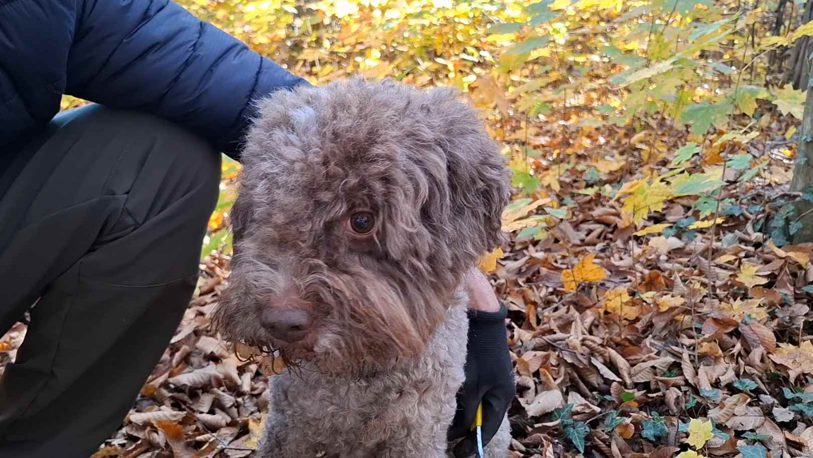
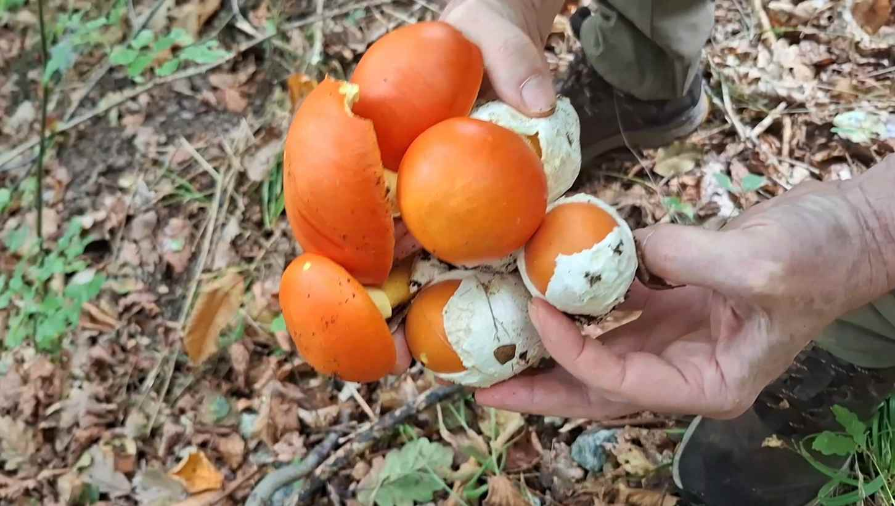
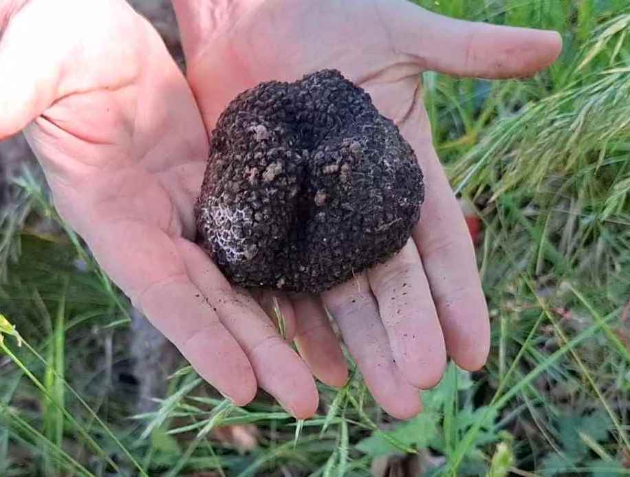
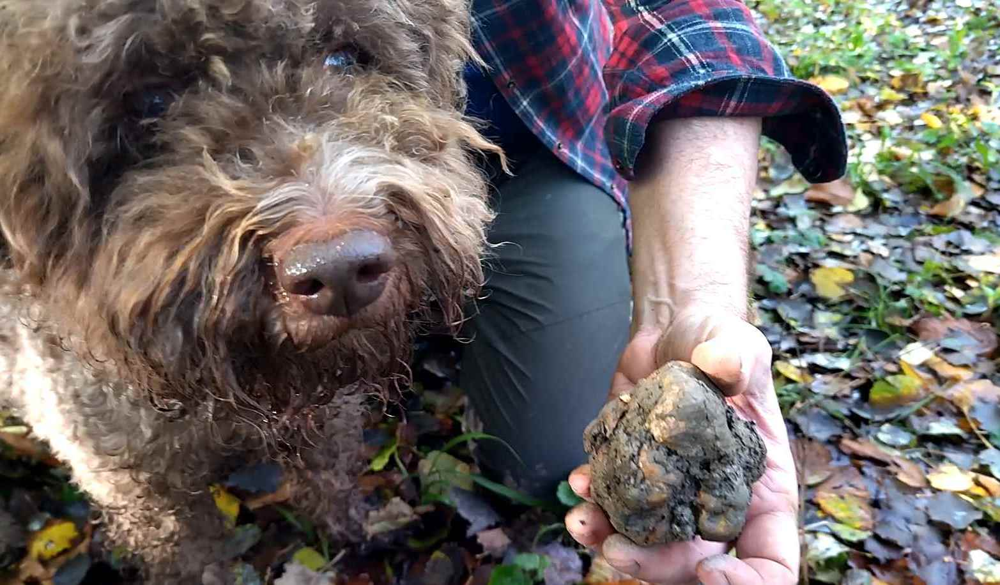
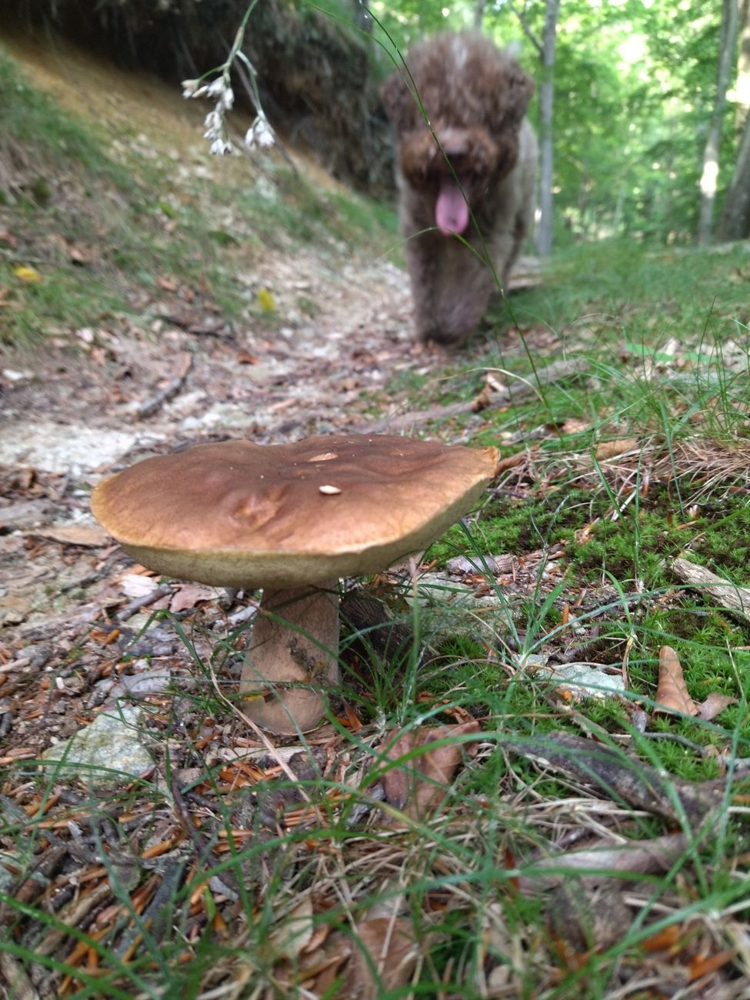

Diretta radar.
La pioggia che cade adesso, le ultime due ore e i prossimi 40 minuti.
Dove è piovuto davvero, stazione per stazione.
Italia, Svizzera, Austria, Francia e Slovenia. Gratis.
La pioggia che cade adesso, le ultime due ore e i prossimi 40 minuti.
Faggete, castagneti, querceti e abetaie sopra la foto vera. Ti avvicini fino agli alberi.
I prossimi sette giorni, ora per ora: temperatura, pioggia, probabilità e vento.
Tocca un pallino: pioggia, temperatura, vento e umidità.
I millimetri misurati dalle agenzie regionali, non le previsioni.
Gratis, senza pubblicità, senza registrazione.
YouTube
Il nostro diario, 12 mesi all'anno, in tempo reale: specie nuove, ritrovamenti strani, giornate epiche e disastrose. Sempre con Archie.



Le domande del tesserino, in un gioco.
Domande ufficiali per Campania, Lazio, Marche e Toscana. Per le altre quattro regioni, esempi elaborati sui testi di studio. Gratis, senza registrazione, anche dal telefono.
Le regioni: Lombardia · Piemonte · Emilia-Romagna · Liguria · Campania · Lazio · Marche · Toscana

Un piccolo canale nato per raccontare la vita nei boschi: funghi epigei e ipogei, dai porcini al tartufo bianco pregiato. Con noi c'è sempre Archie, il nostro lagotto romagnolo.

